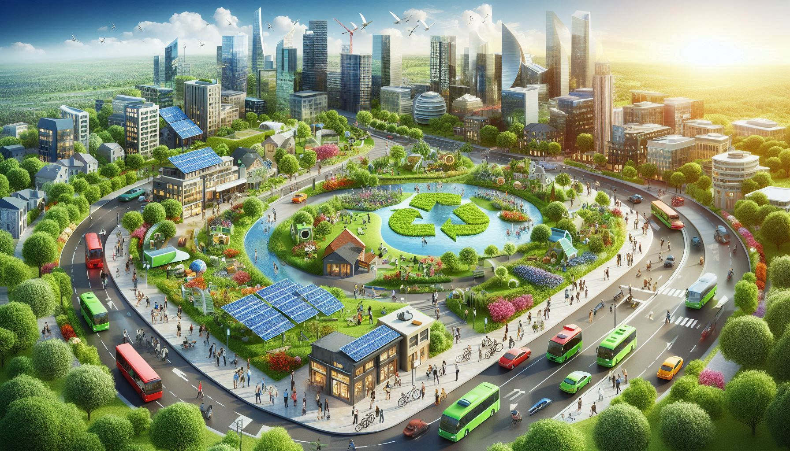

Un cambio de paradigma necesario
“En una economía circular, el residuo se convierte en recurso, el diseño piensa en el futuro y la innovación está al servicio del planeta.”
Ventajas de la economía circular
- 1 Reduce significativamente la generación de residuos.
- 2 Conserva los recursos naturales al fomentar la reutilización.
- 3 Impulsa la innovación y crea nuevos modelos de negocio sostenibles.
- 4 Disminuye la dependencia de materias primas vírgenes.
- 5 Contribuye a mitigar el cambio climático.
- 6 Fomenta la colaboración entre sectores y comunidades para crear soluciones compartidas.
La economía circular como modelo futuro
El futuro de este modelo se proyecta como una piedra angular del desarrollo sostenible global. La Unión Europea impulsa estrategias para consolidar este enfoque de aquí a 2050. Tecnologías como la inteligencia artificial, el blockchain y el Internet de las Cosas serán claves para optimizar los procesos productivos y la trazabilidad.
“La economía circular no es una opción, es una necesidad”, destacan expertos del sector en múltiples jornadas y congresos.
La economía circular representa mucho más que una tendencia: es una transformación profunda del modelo productivo actual. Adoptarla implica repensar la forma en la que diseñamos, consumimos y gestionamos los recursos, fomentando un sistema más eficiente, resiliente y respetuoso con el entorno. Si bien aún existen desafíos técnicos y sociales, los beneficios ambientales, económicos y sociales que ofrece este modelo lo convierten en una de las claves para un futuro sostenible. Apostar por la circularidad no solo es una oportunidad, es una responsabilidad compartida entre ciudadanos, empresas e instituciones.